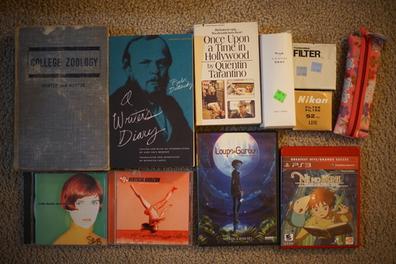

I got the largies together for a photo or two. A few of them aren't very well posed but I was done trying by the end. Getting multiple largies to stand and not knock each other over is a task. Cheby always goes in last because he's the first one down.

My extended mtn dewniverse. Hina looks like she's got a reverse harem! I unintentionally split the black wearers from the color wearers. Rio won't be stuck in black forever.

Three friends with grumpus in the center~

Two cousins. I sent this one to Migi just for funsies. Ryu is the best!!!

Volks news was released recently!! As usual, I can't wait to get my copy uhhh next month? Azuma said in a tweet that all the F-100 heads were released in Furucho (other than SD16 Diamond), so hors and I went and tracked down their numbers. They're all listed in the cafe page for the F100 contest now. I'm very excited to see Azuma's F-116! I love seeing the designers get their dolls.
I also started thinking about how many SD16 Diamonds are out there. I was able to track down 6 total. There was only one online FCS round for her and I only recall one one-off. I bet she'd be worth quite a bit if she showed up for auction on a Japanese site.
It's been a year now since we had online FCS. I think we're all starting to doubt its return. It is the only thing good about VolksUSA other than Volks News since the exchange rate came to favor USD heavily. I can't imagine buying from them right now other than for the thing only Japan can do in person. Only a few people can afford to support them!

The album art was so cool I had to try it
For some reason this was in the cabinet for $10 a month ago. Obviously not the big hit they thought it would be.
Phew, I bought another game I don't need to add to my backlog... I have been super uninterested in playing games for almost a year now. I should probably stop buying them.
I was very happy to find two 52mm filters that can be used as lens protectors. I only have one and have been swapping it out on whatever lens I'm using most or just not using one.
9.1 inch circumference which is similar to a large doll's head circumference
I was going to buy one for me but Ryan said he would wear one so I bought him one too. I used my target gift card on them because there's nothing I want at target. Why do you guys like that place so much?
I knew almost every track on their first album and 0 tracks on this album? Strange
I really love this robert downey jr guy!!! Just kidding... it's for Ryan's dad
Who designed this cover? She looks like a hot mess
How long can I wear this before someone spoils me on which character wears this?? DON'T TELL ME
He lives now in my itabag
I bought it for Ryan!!!
I smashed the box when I tripped running away in Ryan's slides from a woman yelling at me from across the street. I skinned my knee too ;____; Ryan gave me a really cute Phanphy out of it!